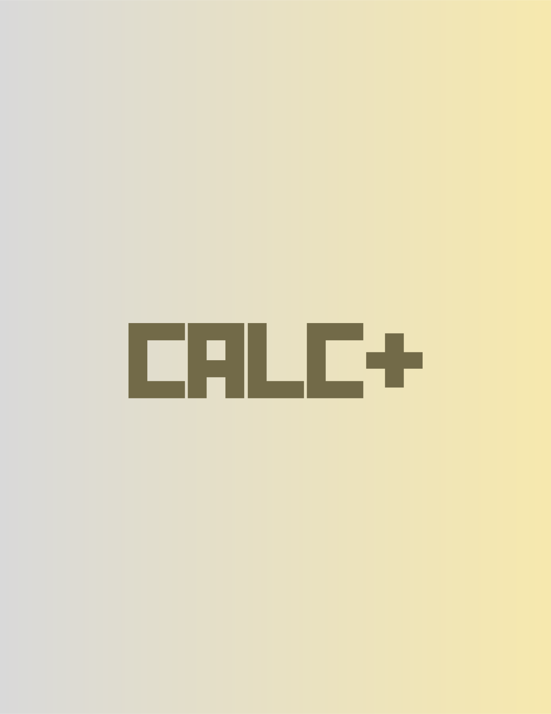

a full-stack developer💻 with a nack for style.
about me.
Hey there!👋 My name is Thiago de Matos. I am a full-stack engineers who loves building beautiful interfaces that solves real-world problems.
check out my stack.
Using the right tools🛠️ for the right occasions is what I do.


a glimpse of my portfolio.
each project is specifically crafted to show you a taste of my capabilities👇
HTML5, CSS3, JAVASCRIPT, WEBPACK
HTML5, CSS3, JAVASCRIPT, WEBPACK

HTML5, CSS3, JAVASCRIPT, NPM
Stay up-to-date with my latest blogs
Learn about me, what I am learning, and get some programing knowledge📖
like what you see?
🤗
Click to download my resume below!